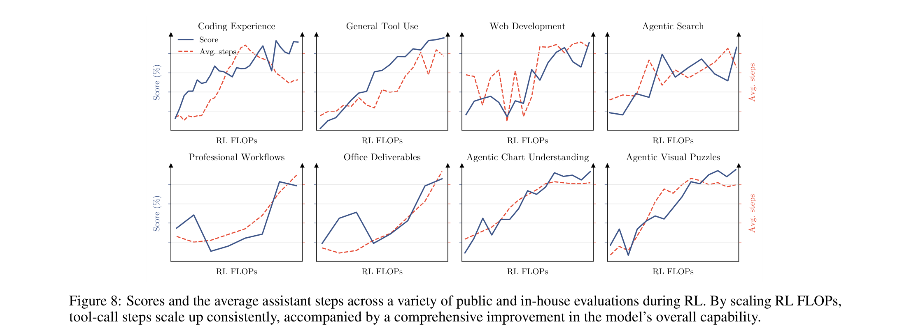
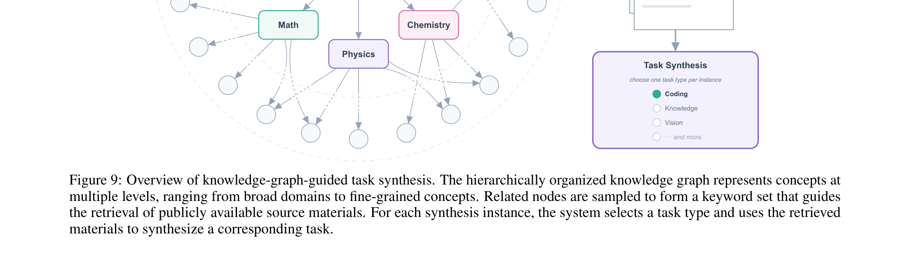
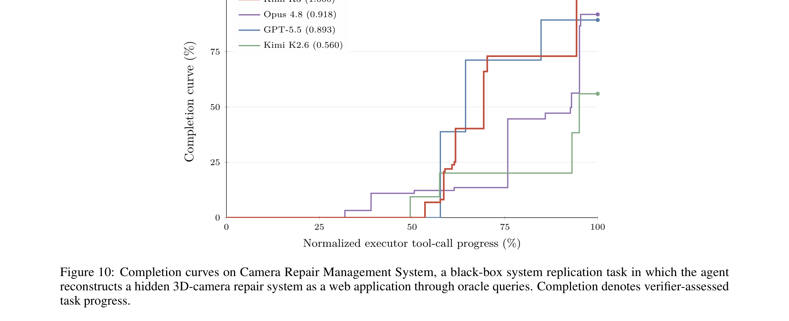
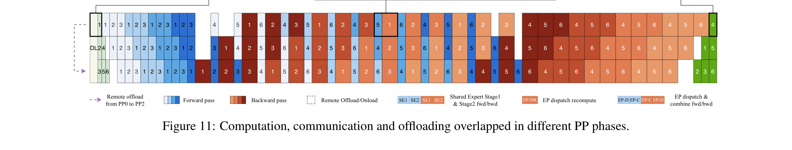
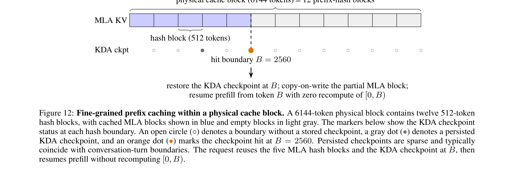

Kimi K3的2.8T参数MoE模型不仅架构创新，后训练（Post-Training）和基础设施（Infrastructure）同样关键。三阶段后训练把SFT冷启动、多域专家RL和MOPD蒸馏结合，在1M-token上下文上训练出通用Agent能力。基础设施则从KDA算法-系统协同设计、3T类预训练、1M Agentic RL到在线推理服务，覆盖了模型全生命周期。
Kimi K3的后训练遵循一个三阶段范式：通过监督微调（SFT）初始化基线Agent能力，通过强化学习（RL）在不同推理力度上培养专业领域专家，最后通过多教师在线策略蒸馏（MOPD）将领域专用策略合并为单一模型。
SFT阶段在Kimi前代模型管线基础上大幅扩展了复杂Agent任务的数据覆盖。它们使用Kimi系列领域专用模型合成数据轨迹，经过多轮验证和人工标注。所有数据用XTML聊天模板序列化，赋予Kimi K3自适应推理、精确工具调用和长程Agent场景的稳健执行能力。从SFT阶段开始就应用了量化感知训练（QAT），权重用MXFP4、激活用MXFP8。
RL阶段是解锁高阶推理和执行能力的关键。Kimi K3不针对单个任务训练专用RL模型，而是将RL扩展到三个广泛领域，每个领域覆盖大量子任务，在每个推理力度上训练一个专家：(i) 通用任务（经验/视觉/推理/忠诚度/搜索/知识工作）；(ii) 通用Agent（长程助手/深度研究/段落级写作）；(iii) Coding Agent（软件工程/编码经验/内核任务/Web开发）。三个领域专家 × 三个推理力度（低/高/最大）共产生9个专家模型。
为缓解长程任务中的尾延迟，Kimi K3扩展了同步RL框架中的Partial Rollout方案。每轮rollout对N个prompt各采样K个completion，当 λ(0,1) 比例（λNK）的轨迹完成后，生成阶段即暂停，让策略优化无需等执行拖尾者。暂停的rollouts排入队列，优先在下轮迭代开始时恢复，由沙箱基础设施支持。

在Partial Rollout下，单个长程轨迹自然跨越多次迭代，引入数据陈旧性。策略优化算法通过逐token正则化来容忍这种极端off-policy场景，将策略更新约束在局部邻域内，稳健处理高陈旧度数据。
推理力度控制通过per-problem预算机制实现。每个问题x关联一个初始token预算b₀(x)，轨迹总token超出阈值 τ·b₀(x) 时奖励置为 -1。训练按 τ 的阶段性课程进行：先训练大预算变体，再退火到较小的 τ 值获得高/低力度专家模型。所有专家模型的轨迹被联合收集用于SFT和MOPD。
Agentic生成式奖励模型（GRM）用于不可验证的通用任务，采用锦标赛式组奖励和二元比较。GRM遵循强制协议：(1) 读取输出；(2) 生成评分标准；(3) 按标准评分；(4) 记录分数。为防止奖励黑客攻击，应用基于预算的冗长控制：输出超 σ·ℓ₀ 的候选自动输掉比较。
MOPD将9个领域专用、不同推理力度的专家模型合为统一模型。训练时，对于给定域d和推理力度e，优化由对应教师模型 πᵈᵉ_teacher指导。逐token的OPD奖励定义为教师与学生log-prob的clipped比值，作为密集奖励信号无缝融入RL框架，自然支持Partial Rollout等基础设施优化。更细粒度的top-k蒸馏目标在Kimi K3的设定下未带来明显收益。
MXFP4量化感知训练对MoE专家权重（占模型参数大部分）量化到MXFP4，激活用MXFP8，非专家模块保持高精度。QAT覆盖整个后训练阶段（SFT和RL），rollout和训练共享同一量化方案，消除训练-推理不匹配。
Draft模型微调：Kimi K3预训练了多token预测（MTP）层，结构与EAGLE-3的draft模型匹配。MTP层被微调为EAGLE-3风格draft模型，冻结目标模型仅更新draft层和特征融合投影。draft输入融合目标模型第1/4/最终AttnRes块的输出。直接优化基于似然的LK损失（接受率的负对数），而非传统KL散度。
RL框架的有效性高度依赖丰富、多样且可稳健验证的环境。Kimi K3设计了一系列专用白盒环境和任务合成范式。
使用单一固定Agent harness训练会导致模型过拟合特定的工具schema、系统提示词或交互协议。Kimi K3开发了统一白盒RL环境，将Agent harness表示为可配置、可组合的模块集合（工具接口/系统提示词/上下文管理/技能/记忆/子Agent等）。通过配置组合这些模块，可实例化Kimi Code、Claude Code、Codex、OpenClaw等主流harness，以及全新的harness。同一抽象也支持跨任务域的RL。
后训练任务的质量和多样性由源材料决定。细粒度概念驱动的检索能挖掘专业和代表性不足的知识，而跨多样概念的采样能拓宽领域覆盖。Kimi K3构建了一个自进化的、分层组织的知识图谱，Agent通过Web规模探索在知识和编码领域持续扩展。

知识图谱以有向无环图形式构建，通过递归、Agent驱动的扩展形成。从预定义的粗粒度种子节点开始，每个节点分配一个Agent实例执行多次Web搜索，发现等价或相关概念时复用已有节点，最小化重复。边始终从粗粒度概念指向细粒度概念。新节点被分配给Agent进一步探索，分支在当前概念足够原子时停止扩展。
材料检索时，系统在不同粒度层级采样节点，从采样节点派生的关键词结合知识图谱中祖先的上下文信息构建Web查询。检索到的真实材料由合成Agent生成各种类型的训练任务。
Kimi K3在Agent环境的可验证问题上训练，代表性问题包括多步复杂信息搜索、投资银行/数据分析/法律实践等专业工作流、以及STEM问题/视觉谜题/图表理解的多步可验证视觉推理。每个视觉推理轨迹在配备Python解释器的隔离沙箱中生成：模型迭代编写和执行代码以裁剪/缩放/变换输入图像，执行精确计算或验证中间结果。
内核优化任务：Kimi K3构建了大规模内核任务套件，从单算子内核到融合巨型内核，覆盖CUDA/Triton/CuTe DSL/Gluon/ThunderKittens/TileLang等多种GPU编程方法，以及BF16/FP8/FP4等数值格式。奖励基于正确性和性能，并开发了黑客检测系统惩罚CUDA graph replay/输入缓存/精度降低等奖励黑客策略。
个人助理任务：开发了真实应用的mock实现（Gmail/Notion/Slack/Canvas等），保留核心语义的同时支持可重现的大规模交互。任务在持续演化的环境中运行，横跨多个模拟天，涉及数十个跨应用关联事件。单次rollout可能涉及数千次工具调用和数百万上下文token。
自主执行任务（AET）：一种新的环境范式，通过验证循环优化训练长程Agent智能。每个任务指定初始状态、约束目标、基于工具的动作空间和执行预算，以及独立验证器。Agent看不到参考轨迹或预定义流程，必须自主执行任务分解、工具选择、规划、错误恢复和终止。奖励基于验证器对最终环境状态的评估，而非Agent自报的完成状态。

Web开发任务：专家策划的多样化Web开发任务套件，覆盖典型场景。输入从单行场景描述到多段落规格说明；产物涵盖网站、交互游戏、3D/WebGL场景、数据可视化、SVG和全栈应用。每项任务在容器化沙箱中运行，在多样化Agent scaffold下rollout。奖励由确定性检查和模型评判两部分组成。
Kimi K3的系统架构面临三个很少同时出现的挑战：混合KDA注意力、3T级稀疏多模态训练推理、以及百万token的Agent工作负载。基础设施与这些挑战在整个模型生命周期中协同设计。
KDA状态更新的串行依赖与GPU对宽并行性的偏好相矛盾，在每种执行场景中表现为不同的瓶颈。Kimi K3为每种场景设计了专用内核。
Chunkwise内核（训练/prefill）：KDA的chunkwise形式在chunk内并行但跨chunk串行。FlashKDA是基于CUTLASS的chunkwise内核，将intra-chunk计算与跨chunk状态传播重叠。内核将工作分解为token并行阶段和head并行循环，各自独立调度和调优，性能大幅超越Triton参考实现。
设备内上下文并行（长上下文prefill）：张量并行分割head但不缩短循环，纯TP部署下超长序列prefill使大部分SM空闲。Kimi K3利用一个关键观察：每段的状态转换可独立于传入状态求值并精确组合：实现自动SM级上下文并行规划器，在单rank的SM间分割序列，并行求值段转换，再合并恢复每段的精确初始状态。
上下文并行在softmax和线性注意力间的通信开销有本质区别。Softmax注意力需要rank间交换随序列长度增长的KV块。KDA的delta rule在更新状态前对传入状态应用token依赖矩阵Mt，使得局部段的效果取决于进入该段的状态，无法仅从S=0计算的状态确定。
KCP将每段的效果分解为两个局部可计算的量：作用于传入状态的累积转移和从零生成的局部状态。每个rank先计算局部MTi←1和eSTi，然后通过一次all-gather交换。rank i+1通过按序处理同文档的前面片段重建STi，从S=0开始依次应用S ← MTj←1 S + eSTj。因此KCP只需固定大小的all-gather进行循环状态同步，实现线性计算扩展。
Kimi K3预训练结合了流水线并行（PP）与虚拟阶段（VP）、专家并行（EP）、ZeRO-1数据并行、Pipeline ZeRO-2梯度分片和上下文并行（CP）。MoE层在EP rank间复制共享专家，all-to-all通信与计算重叠以隐藏延迟。3T级原生多模态预训练面临三个关键问题：(i) EP rank间token负载不均；(ii) 激活/梯度/优化器状态超内存预算；(iii) 视觉编码器的高变计算暴露在关键路径上。

传统EP方案中，token负载跨rank不均衡，导致吞吐下降和内存碎片。MoonEP3通过动态冗余专家实现完美负载均衡。其核心保证是：每个rank收到恰好S×K个token，所有rank执行相同计算量。
MoonEP证明了一个关键结论：一个平衡的规划始终存在，且每个rank最多需要E/R个冗余专家，这个界是紧的。因此每个rank预留E/R冗余专家槽就保证规划总能找到可行解，训练永不中断。相比之下，ECHO和UltraEP等前人工作预设冗余专家数或设置per-rank token上限，训练在无可行规划时被迫停止，上限需手动调优且仍有残留不均衡。
在线规划：MoonEP在GPU上运行规划内核，接近最优、开销可忽略且始终遵守E/R上界。零拷贝通信：规划内核预计算每个token的目的地，token直接发送到远程rank的专家分组位置，消除中间拷贝。在最坏不均衡下，DeepEP需要S×K×R大小的通信缓冲，MoonEP只需固定S×K。无同步执行：完美平衡下每层计算形状静态已知，消除了逐层MoE host同步和kernel launch开销。
Expert-GEMM调度：即使总负载完美平衡，rank内每个专家的token数仍有倾斜。MoonEP使用workload-aware调度器，在launch前根据当前token分布自适应参数，轻量级启发式通过硬件指标的解析成本模型选择参数，关键系数通过离线自动调优标定。共享专家的GEMM被分发到独立流上与其他内核重叠。
统一激活管理器：所有为反向传播保存的tensor关联可插拔存储后端。重计算、量化和卸载/远程卸载只是该抽象下的存储策略，可在tensor粒度自由组合，策略通过轻量级注解声明，与模型代码完全解耦。大部分激活使用块级FP8量化结合卸载/远程卸载，逐元素算子配置为重计算。
内存高效MoE：通过数学变换将permuted probs的梯度计算写成只依赖中间激活act_output和上游梯度doutput的形式，消除对output的反向依赖。在group GEMM前向中只保存dispatch操作的输入，反向时通过重计算dispatch恢复。
内存高效Attention Residual：Block AttnRes的块表示在边界层生成一次，被所有后续层共享，直接驻留GPU。AttnRes计算完全包裹checkpointing，每层保存的激活与标准残差架构相同。流水线并行采用基于缓存的流水线通信，仅增量传输新生成的块，微批完成后立即释放。
跨PP rank激活均衡：interleaved 1F1B下激活分布不均。使用Mooncake Transfer Engine将激活远程卸载到其他PP rank的内存，实现跨PP rank的激活内存均衡。
Pipeline ZeRO-2 + P2P Muon：梯度通过Pipeline ZeRO-2在DP rank间分片并存储到CPU内存。分布式优化器将参数均匀分片到DP rank，Muon的Newton-Schulz正交化需要完整参数矩阵，改用P2P通信从对应owner rank仅取本地拥有的参数分片，消除全参数缓冲。
动态CP：长上下文多模态训练中，大图像和长视频大幅增加视觉编码器计算时间并造成设备间负载不均。Kimi K3将上下文并行扩展到这些大样本：单张大图沿patch维度在多个设备间分割，通过gather-KV计算注意力。每个CP组再分为多个子CP组，多个大图以负载均衡方式分布，防止通信比例随规模增长。
PP气泡中的编码器计算：在interleaved 1F1B下，前几个PP微批的文本前向全部排在开头，最后几个微批的文本反向排到末尾。Kimi K3将ViT前向分解，前几个PP微批的ViT前向同步执行，其余前向调度到pipeline气泡中，反向类似处理。大部分ViT计算被隐藏在pipeline气泡中，基本消除视觉编码器的有效开销。
在有限计算预算下将Kimi K3这样大的模型扩展到百万token上下文的Agentic RL，使资源效率成为首要目标。这推动了两个互补方向：(1) 高效训练和rollout，包括KV缓存管理、请求调度和训练状态放置；(2) 长程交互的高性能可恢复沙箱。
Kimi K3采用共置RL训练将每个1M上下文实验保持在几百个GPU内，使用Partial Rollout减少超长轨迹的尾延迟。但rollout KV缓存（需跨迭代持久化）和训练内存之间存在竞争。
外部KV缓存池：1M上下文多步rollout中，前缀KV缓存miss代价极高。Kimi K3采用写回设计：活跃解码块留在GPU KV缓存，可重用的空闲前缀在被GPU逐出时写回CPU DRAM的外部KV缓存池，下次重用前预取回来。KDA状态与对应MLA KV缓存块一起卸载和预取。训练状态（模型权重和优化器状态）在训练迭代完成后卸载到NVMe。
Rollout自动限流调度器：多步rollout中上下文随轨迹推进逐渐增长，固定并发度难以估计。Kimi K3设计自动限流机制，使用活跃请求数、排队请求数和KV缓存利用率等运行时信号动态控制发往推理引擎的请求数。
梯度缓冲复用：RL损失计算需要前向-only的非策略模型（如reference模型），其权重太大无法常驻GPU。Kimi K3将这些权重放在CPU内存，用策略模型的FP32梯度缓冲存储作为backing，只在需要时加载。
Kimi K3使用多种沙箱运行时支持后训练和评估的不同需求，包括传统容器运行时、GPU沙箱运行时，以及全新的microVM沙箱运行时AgentENV。AgentENV由Kimi与合作伙伴联合开发，围绕三个核心设计目标：
高保真隔离：Agent越强越可能激进探索甚至尝试奖励黑客。传统容器运行时中观察到多次内核panic和死锁。AgentENV使用Firecracker运行隔离microVM，提供容器运行时无法比拟的隔离性和保真度：Agent可以挂载磁盘、运行容器甚至启动虚拟机。
灵活沙箱生命周期：AgentENV支持增量checkpoint/恢复，仅保存自上次checkpoint以来脏化的内存页，checkpoint延迟133ms、恢复49ms。提供三个高级操作：(a) Pause/Resume：暂停时零内存CPU消耗，Agent等待模型推理结果时（占沙箱生存期98%）可暂停；(b) Fork：从精确状态创建新沙箱，用于无副作用的奖励评判；(c) Snapshot：定期保存沙箱快照用于错误恢复。
高效率高密度：工作负载下需在数秒内创建数万个沙箱，每个有独特镜像集。AgentENV采用OverlayBD镜像格式，配合自定义ublk驱动、存储层共享和P2P传输，实现大规模亚秒级启动延迟。通过COW内存和页缓存优化，实际工作负载中实现6.5× 内存超卖比。Kimi K3训练和评估中总计创建了51,219,741个沙箱，使用1,505,678个镜像。
Kimi K3的推理服务面临同样挑战：混合KDA-MLA架构维护两种根本不同的缓存，需在百万token上下文中联合管理；新模块和高稀疏度专家需要专用内核；生产流量混合了每请求成本跨越三个数量级的请求。
混合架构使前缀缓存复杂化：KDA循环状态和MLA KV缓存在大孝生命周期上根本不同，但只有在两者都能同时恢复时，缓存前缀才可重用。Kimi K3设计KDA感知前缀缓存，统一管理两种缓存类型。

统一缓存布局：KDA状态打包到与MLA KV相同的分页块池中，统一页面为相同字节大小，共享分配/引用计数/逐出实现。页面内所有head状态按head连续存储，每个head的字节流自包含，是跨节点传输的最小单元。
KDA前缀缓存优化：传统基于block-hash的前缀缓存在Kimi K3上失效：block-hash匹配要求所有层共享一个块大小，且KDA层维护的是单一大循环状态而非每token条目。Kimi K3将两种粒度解耦：前缀哈希在MLA页面内以细粒度哈希块（512 token）运行，而物理块保持粗粒度分配单元。KDA checkpoint仅在MLA哈希端点的（稀疏）子集上保存，支持在物理块中间（如2560 token处）命中前缀并恢复prefill。
并发调度一致性：三个设计要点：(a) 所有缓存组在分配前从共享空闲列表pin住命中块；(b) 刚分配或注册的块在拷贝落地前排除在匹配之外；(c) 一个KDA组的checkpoint逐出会原子地使其兄弟组失效：checkpoint要么在所有组中可命中，要么全部不可命中。
KDA解码：与prefill不同，KDA解码的主要瓶颈从利用并行性转向高效管理循环状态（每步原地更新）。MTP推测解码中，如果验证拒绝部分draft token，状态已推进到最后一个接受token之后。Kimi K3的方案：只缓存draft token的投影输入，接受token的状态在芯片上重建，验证和bonus token的状态写回。一个融合内核覆盖短卷积/输入归一化/门控/KDA循环/输出归一化。
Block AttnRes：两阶段调度：批量的跨块pass每块读一次缓存块表示，每层通过online-softmax merge折叠块内部分和。Prefill优化采用序列并行（SP），TP all-reduce分解为reduce-scatter + all-gather，块内kernel插入两个集合之间，消除额外内存消耗。解码优化将跨块内核启动在副流上，与主流的独立计算重叠；块内内核通过融合（AttnRes输出与部分和更新合并 + 后续RMSNorm）简化为前一个TP all-reduce的一部分。
Stable LatentMoE：三项优化：(1) 将latent down-projection与MoE路由器融合为单个GEMM；(2) 在rank间分片latent权重矩阵，使用multimem store指令将输出all-gather融合到GEMM epilogue；(3) 将通信与其他算子（如共享专家计算）重叠。小batch下group GEMM变为内存受限的权重矩阵流，解码内核基于WarpDecode的token-centric设计，每个warp负责一个输出神经元，直接流式加载权重。
缓存感知亲和调度：1M上下文下，典型编码输入携带400K token前缀但只需4K token prefill增量。前缀缓存命中比miss便宜数个数量级。每个请求路由到持有其前缀缓存的集群，一致性哈希将每个session固定到两个集群：主集群处理流量，预分配备用集群在主集群故障时接管。备用集群无session前缀缓存，故障时需重新prefill，但一致性哈希将备用分配均匀分布到整个集群，限制单集群故障的影响。
基于预算的准入控制：生产流量混合了2K token以下短请求和1M token超长请求，每请求成本跨越三个数量级。Kimi K3采用基于预算的准入控制，为不同请求类分配独立资源预算，使突发长上下文流量最多消耗其自身份额，不会恶化其他类的系统级SLO。
参考：https://github.com/MoonshotAI/Kimi-K3/blob/main/k3_tech_report.pdf